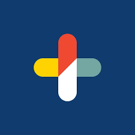
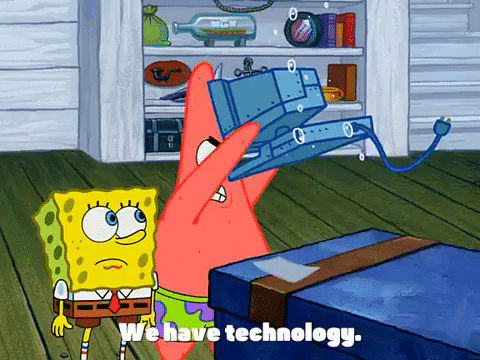

Open To Opportunities
I investigate alerts, trace the evidence, and turn uncertainty into action.
I have always been curious about how things work-what connects them, what causes them to break, and how they can be made better. That curiosity naturally led me toward technology, where every system has a story and every detail can shape the outcome.
I bring a thoughtful, analytical approach to every challenge-observing patterns, asking questions, and tracing issues back to their source. I enjoy uncovering the full story behind a problem and turning what I find into solutions that make processes stronger, safer, and more resilient.
I am driven by investigation-not just to find answers, but to understand their meaning. I like uncovering patterns, tracing causes, and using those insights to strengthen what comes next. This mindset keeps me curious and intentional in my work: always looking for ways to turn complexity into clarity and information into action.
Professional Timeline
Experience
I am passionate about bringing my expertise into a team where I can make a real impact. My background includes working with threat management, compliance, and risk assessment in different contexts. I've built valuable hands-on experience in cybersecurity through my past roles, and I'm always looking to grow further. I am open to opportunities where I can apply my skills and contribute to building secure environments.
Organizations I Have Worked With
Madison Square Garden

Capsule
BlackRock
NBCUniversal
Capability Map
Skills
I bring a balanced mix of technical and operational security skills that support both defensive strategies and organizational resilience. My focus is on learning, adapting, and applying best practices to strengthen systems against evolving threats while contributing effectively in collaborative environments.
Security Operations & Incident Response
Incident Response
Threat Detection
SIEM Monitoring
Log Analysis
Vulnerability Management
Threat Hunting
Security Event Triage
Network Traffic Analysis
Malware Investigation
Endpoint Security
Governance, Risk & Compliance (GRC)
Risk Assessment
Security Policies
Third-Party Risk
Security Auditing
Compliance Reporting
Data Protection
Policy Enforcement
Security Documentation
Regulatory Compliance
Cloud & Infrastructure Security
AWS
IAM (Identity & Access Management)
Cloud Security Monitoring
Cloud Monitoring
Network Security
VPN Security
Firewall Configuration
Windows Administration
Linux Administration
Tools & Platforms
Splunk
Wireshark
GitHub
Docker
ServiceNow
VirtualBox
Programming & Automation
Python
Bash Scripting
PowerShell
HTML5
CSS3
JSON
Automation Workflows
Credential Library
Certifications
I believe in staying up to date and expanding my knowledge so I can bring the best practices to every role I take on. Click the button under the certification name to view.
PDF Certificate
Google Cybersecurity
Detection, response, security operations, and practical risk awareness.
PDF CertificateGoogle Business Intelligence
Dashboards, metrics, data modeling, reporting, and translating business needs into insight.
PDF CertificateGoogle AI Essentials
Practical AI skills, prompt development, productivity workflows, and responsible use.
PDF CertificateGoogle IT Support
Troubleshooting, systems, networking, operating systems, and service support.
PDF CertificateGoogle Project Management
Project planning, stakeholder communication, execution, and delivery discipline.
PDF CertificateCertified Lean Six Sigma Green Belt
Process improvement, root cause analysis, metrics, and operational quality.
Credly BadgeCompTIA ITF+
Foundational IT fluency across infrastructure, software, security, and databases.
Credly BadgeCompTIA A+
Endpoint support, hardware, software, networking, and technical troubleshooting.
Credly BadgeCompTIA Security+
Security principles, monitoring, incident response, architecture, and risk management.
Credly BadgeAWS Certified Cloud Practitioner
Cloud concepts, AWS services, security, architecture, pricing, and support models.
Selected Builds
Projects
These are just a few examples of my projects that showcase my skills and passion for tech. I enjoy experimenting with new tools and frameworks to see how they can strengthen security practices. You can check out even more of my work on my GitHub repository.
Voyage & Virtue: Honeypot-Canary AWS Environment Simulation
Tech Stack Includes: AWS S3; HTML5 + CSS3; IAM (Identity and Access Management); Amazon GuardDuty; Amazon CloudWatch; Amazon EventBridge + SNS
Voyage & Virtue is a collaborative cybersecurity project that simulated a honeypot-canary detection environment in AWS. The team designed a static website hosted on Amazon S3, embedded with canary tokens to detect attacker activity. Cloud-native security tools — including GuardDuty, CloudWatch, and EventBridge with SNS — were integrated to monitor threats, trigger alerts, and automate responses. The project demonstrated practical skills in cloud security architecture, IAM configuration, and Blue Team/Red Team simulation, bridging academic concepts with real-world implementation.

Very Legit, Very Legal: A Noob’s First Cybersecurity Lab
Tech Stack Includes: Kali Linux; Nmap + Nikto; VirtualBox / VM environment; Bash terminal
A beginner-friendly cybersecurity project focused on ethical hacking and system enumeration. Using Kali Linux and built-in tools like Nmap and Nikto, I conducted scans on a deliberately vulnerable VM. The goal was to identify open ports, services, and known vulnerabilities as part of a simulated threat reconnaissance process.
Cyber Threat Timeline
Tech Stack Includes: HTML5 + CSS3; JavaScript (D3.js)
An interactive, fully responsive web visualization of over three decades of major cybersecurity incidents — including data breaches, ransomware outbreaks, and zero-day exploits — from 1990 to 2025. Users can filter by year range, industry, and attack type, and explore detailed event descriptions via hover/tap tooltips. The project showcases front-end engineering, data visualization, and responsive UI design.
HashCrack-Pro
Tech Stack Includes: Python 3; hashlib; argparse; concurrent.futures; itertools; string
A Python-based command-line tool for exploring password hash security through multiple cracking techniques. It supports a wide range of hash types (MD5, SHA-1, SHA-256, SHA-512, PBKDF2), salted and iterated hashes, and offers dictionary, rule-based, and brute-force attacks. The project emphasizes performance with parallel CPU execution and efficient handling of large wordlists, serving as an educational tool for ethical security testing.
Black Excellence Archives
Tech Stack Includes: Next.js; React; TypeScript; Tailwind CSS; Framer Motion; Responsive UI Design; Component-Based Architecture; Vercel Deployment
A Netflix-inspired digital archive celebrating Black innovators, inventors, engineers, creators, and visionaries throughout history. The platform features a cinematic, responsive interface with curated profile collections, immersive category browsing, animated interactions, and visually rich presentation inspired by modern streaming platforms. Designed with a strong emphasis on storytelling, accessibility, and cultural preservation, the project demonstrates modern front-end engineering, component-driven architecture, responsive UI design, and interactive user experiences while blending education with contemporary web aesthetics.
Connect
Contact
Here are the best ways to reach me! Feel free to connect through any of them.